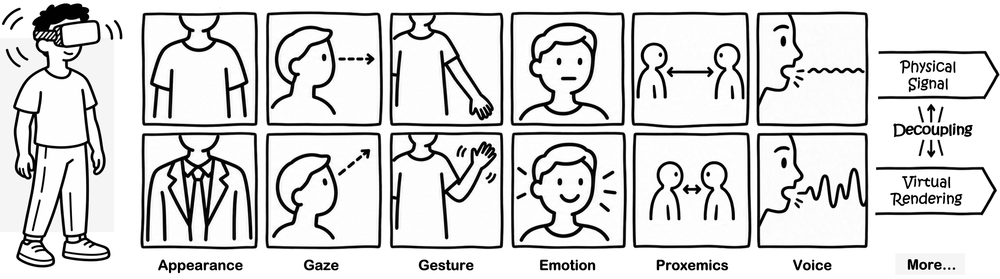

Transforming social interaction
What can XR transform, and how do transformations shape embodiment, agency, social perception, and interpersonal dynamics?
Signals · Representation · Social meaning
Reconfiguring Embodiment, Agency, and Social Relationships in XR
01 / The workshop
In XR, physical behavior and virtual representation can be decoupled. A transformed avatar can change how we experience ourselves—and how others perceive and respond to us.
Transformed Social Interaction (TSI) explores this design space through changes to appearance, gaze, gesture, expression, spatial relationships, and voice. Generative and multimodal AI may extend these possibilities toward context-sensitive, adaptive transformations, while raising questions about agency, authenticity, and social meaning.
We bring together researchers and practitioners in XR, embodiment, human–AI interaction, and computer-mediated communication to examine these possibilities, their limitations, and their ethical boundaries.

02 / Research themes
What can XR transform, and how do transformations shape embodiment, agency, social perception, and interpersonal dynamics?
Signals · Representation · Social meaning
How might AI interpret ongoing interaction, generate embodied transformations, and adapt them in response to people’s behavior?
Social sensing · Generation · Adaptation
How should we evaluate social consequences and address agency, authenticity, transparency, and consent?
Evaluation · Consent · Responsible design
03 / Call for participation
We invite researchers and practitioners across XR, HCI, embodiment, human–AI interaction, computer-mediated communication, and related fields.
Contributions may present empirical studies, interactive systems, theoretical perspectives, methodological challenges, critical perspectives, or emerging research proposals connected to the workshop themes.
If accepted, the workshop will be open to all CHI attendees, with priority for authors of accepted position papers, subject to room capacity and conference procedures. We plan for approximately 20–30 participants. At least two organizers will register and attend in person.
Participant papers are planned for CEUR-WS; the accepted workshop proposal itself would appear in the CHI Extended Abstracts proceedings.
04 / Proposed program
Two consecutive 90-minute sessions, separated by a break. Exact times and break duration will follow the conference schedule.
Frame the motivation, themes, and shared objectives.
Exchange perspectives in pairs and connect across disciplines.
Authors of accepted papers introduce their work and ideas.
Identify connections and prepare for collaborative activities.
Bring interdisciplinary perspectives into shared working groups.
Explore targets, mechanisms, perspectives, and embodied and social effects.
Develop adaptive transformation concepts and research questions.
Discuss agency, authenticity, transparency, consent, and evaluation.
Consolidate findings into an initial research agenda and next steps.
Each 25-minute group activity includes a 4-minute introduction, 13 minutes of discussion, and 8 minutes of sharing.
05 / Organizing team
Cornell University
Ph.D. researcher · Information Science
Studies how transformed and shared embodiment influence nonverbal behavior, interpersonal coordination, and social interaction in human–human and human–AI settings.
Cornell University
Assistant Professor · Human-Centered Design
Directs the Machine Poetics Lab and explores human–technology symbiosis, interpretive and embodied AI, interaction design, and critical making.
University of Birmingham
Professor & Chair · Computer Science
Combines computer vision, sensing, and mixed reality to develop context-aware systems for collaboration, accessibility, and adaptive immersive experiences.
Stanford University
Thomas More Storke Professor · Communication
Founding director of the Virtual Human Interaction Lab and a pioneer of TSI. Studies how immersive experiences and virtual representations affect perception and social interaction.
Cornell University
Associate Professor · Communication
Directs the Virtual Embodiment Lab and studies how virtual embodiment and mediated nonverbal behavior shape perception, communication, collaboration, and teamwork.
06 / Beyond the workshop
Map established and unexplored transformations of embodied social interaction in XR.
Develop ideas for context-sensitive, AI-assisted transformations and the questions they raise.
Identify ethical boundaries, evaluation approaches, and directions for interdisciplinary collaboration.
With participants’ consent, we plan to share a workshop report, presentation materials, and selected collaborative outputs here. Accepted papers and activity instructions will be circulated before the workshop.
Plans for continued collaboration include monthly follow-up discussions and exploring a journal special issue. These are proposed follow-up activities, rather than confirmed publication commitments.
Participation & accessibility
We will ask presenters to share accessible slides in advance, describe important visual content verbally, and caption videos. Shared digital design canvases and structured prompts will support group activities.
We will coordinate individual accessibility needs with conference organizers. Workshop contact details will be announced here.
Contact: organizer email to be announced.